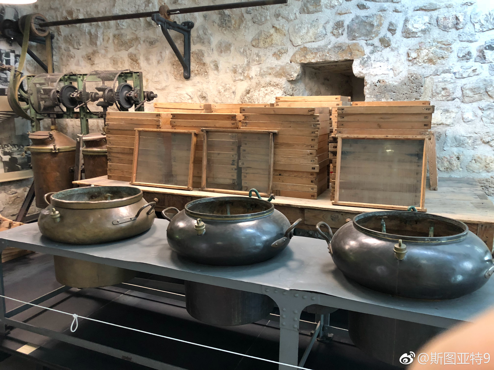

我们公司至少有一个VP大佬是个Pokémon Go的铁杆粉丝，经常见到同玩的其他大佬眼睛放光要求一起组队打塔。 //@刘知远THU:当年看到组里同学个个钻石，我就自觉出坑了。@周羿_Demog:前一阵我成功劝说某同行入坑王者荣耀。他甫一接触便沉迷深陷，虽打得很臭，但每天都要玩三四个小时才肯停手。某日，一硕士生忽邀他组队，且悉心辅助、让他尽取敌将首级。战毕，学生微信问“老师爽不？”。他欣然嘉许之。接着就收到学生回复——“老师爽了今天先别玩了，抽空看下我论文初稿好不？”
Grasse，据说是一个香水制造的中心。有一条商业街，走起来感觉还不错，不过街上基本都是卖香水、艺术品和旅游纪念品的。有一个香水博物馆，里面有一个花园种了很多种号称可以做香水的植物，但咱啥也不懂，看了一圈各种叶子就出来了。博物馆里还展了很多过去制造香水的设备，以及从古至今各个国家无数的香水瓶。不懂行，觉得就是个打卡景点。
总觉得微信朋友圈、公众号和各种群里的转发的各类文章鱼龙混杂，真真假假、三教九流的内容都在，好像是信息的垃圾堆。但反过来想一想，中国这么多各地区各年龄段各阶层人等，有多大比例之前是根本不阅读任何东西的？微信这一平台让这么多人一天到晚阅读来阅读去，怎么说也算是贡献了吧。